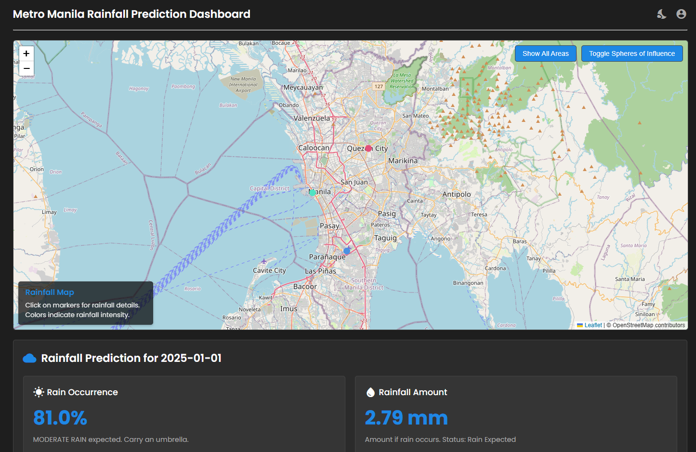
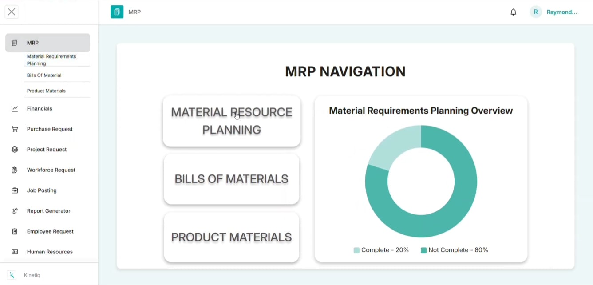
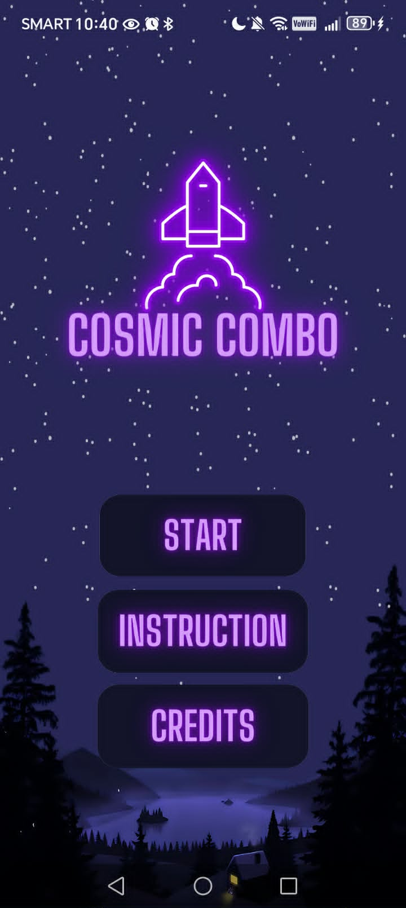
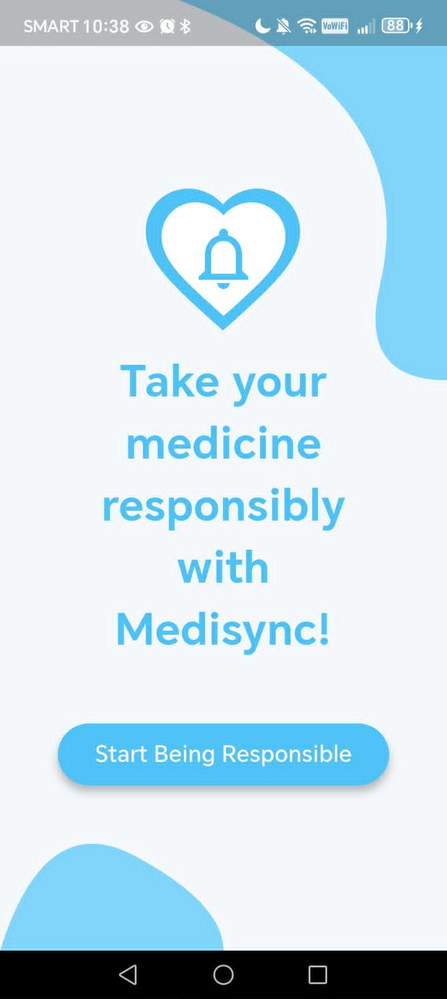
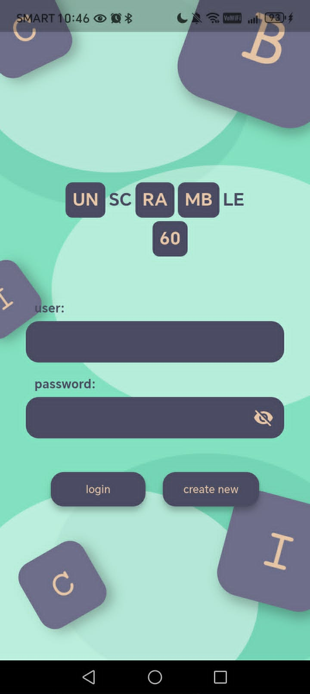

He is an experienced software developer with a strong foundation in Python, Java, and SQL databases (PostgreSQL/MySQL). Having previously interned at Lay Bare Corporation, he has a proven track record of building complex database architectures, enterprise modules, and desktop applications. By blending technical backend expertise with UX design principles, he focuses on delivering software that is as secure and efficient as it is user-friendly.
Featured Projects

Rainfall Prediction
Developed as an undergraduate thesis project, this web application specializes in high-accuracy meteorological forecasting for the Metro Manila area. The system provides real-time insights by predicting both the rainfall levels and pattern shifts across regional spheres of influence.
View project details →
Material Requirements Planning
Built as an enterprise-grade inventory and manufacturing resource planning tool. This application tracks supply chain pipelines, production scheduling, and material availability to automate procurement cycles and optimize stock levels seamlessly.
View project details →Mobile Projects

Cosmic Combo
Cosmic Combo is a vibrant mobile card-matching game set against an immersive, deep-space aesthetic. Designed for quick engagement, it combines classic memory-matching mechanics with a sleek, celestial visual theme.

Medi-Sync
Medi-Sync is a dedicated mobile healthcare application designed to streamline personal medication management. The platform tracks complex prescription schedules and deploys automated alerts to ensure users take the correct dosages at precise times.

Unscramble 60
Unscramble 60 is an educational mobile word game designed to gamify technical learning. It challenges players to decode puzzles while introducing them to essential terminology, acronyms, and jargon used across the Information Technology industry.